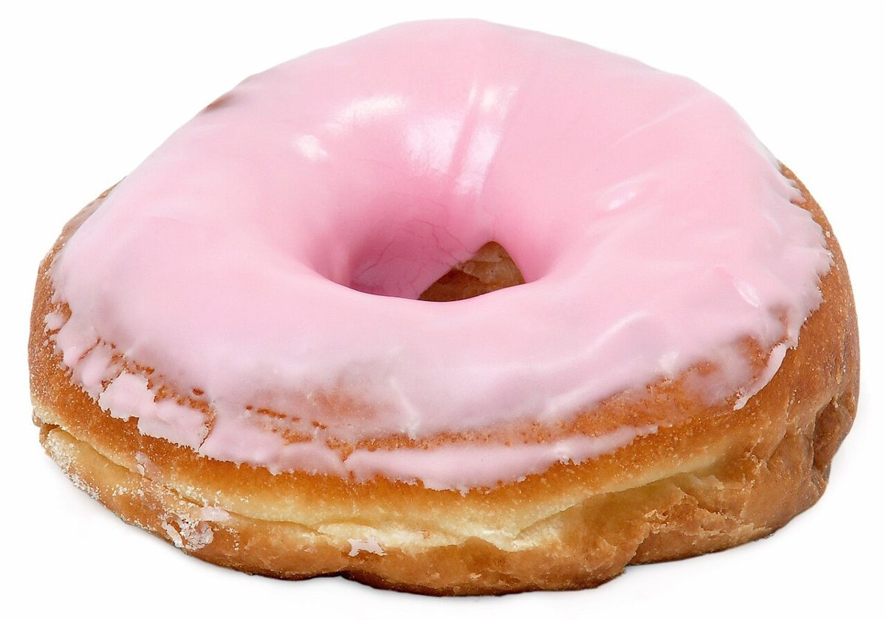
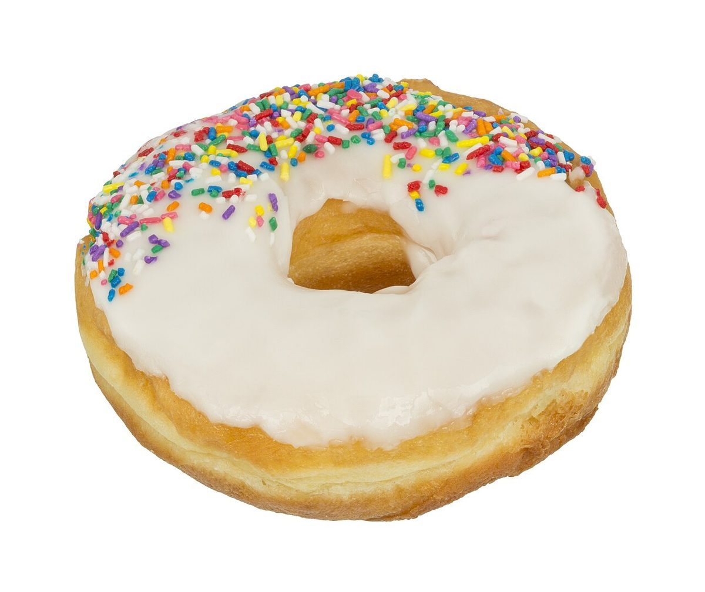
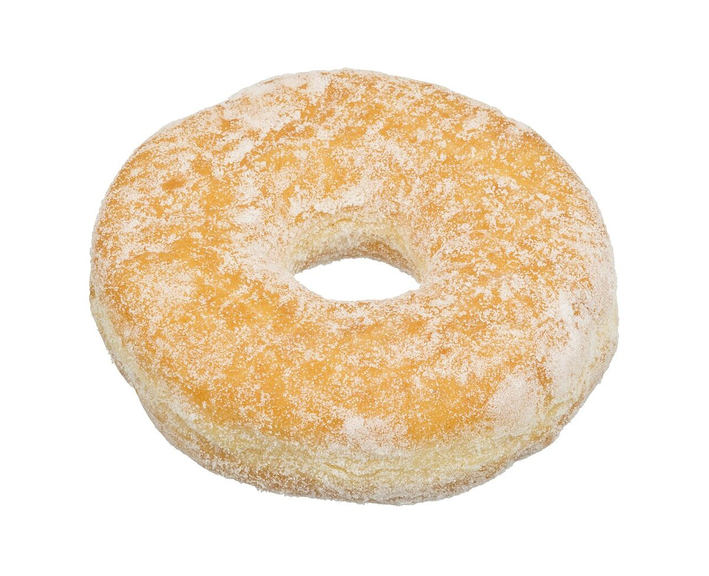

カフェ / 茨城県常総市
おやつの
じかん
茨城県常総市にあるカフェ「おやつのじかん」のご案内ページです。営業時間やメニューなど、詳しいことは準備中。まずはInstagramをのぞいてみてください。電話は 0297-33-9136 です。

制作側の連想
「じかん」から、ストップウォッチを思い浮かべて
店名の由来は分かりません。制作側は「じかん」という言葉から計時を連想し、ストップウォッチの操作ボタンになぞらえた五つのページを作りました。お店の理念・由来とは無関係な、制作側の連想です。
五つのラップ(イメージ)
押すたびに、ひとつ進む。
表の時刻は飾りで、お店の営業時間ではありません。写真は商品や店内ではなく、国外・撮影地不明のフリー素材です。
- LAP 010:00.00
スタートホーム
いまご覧のページです。所在地・電話・Instagramをまとめています。

撮影地不明のイメージ - LAP 020:03.00
ラップ1店のこと
確認できていることと、制作側の想像を分けて書いています。

撮影地不明のイメージ - LAP 030:06.00
ラップ2メニュー
メニューと価格は準備中です。

撮影地不明のイメージ - LAP 040:09.00
スプリット口コミ
制作側が創作したイメージ例です。

撮影地不明のイメージ - LAP 050:12.00
ストップアクセス
住所と地図を載せています。

撮影地不明のイメージ
ご案内
お店のこと(確認できたものだけ)
| 所在地 | 茨城県常総市水海道森下町３９５０−１ |
|---|---|
| 電話 | 0297-33-9136 |
| 営業時間 | 準備中 |
| 定休日 | 準備中 |
| ご予約 | 準備中 |
| 駐車場 | 準備中 |
| SNS | Instagram @oyatsunojikan2018 |